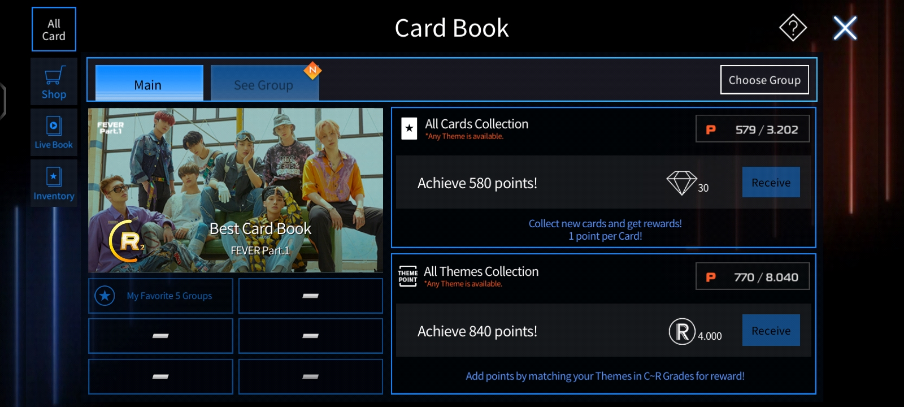
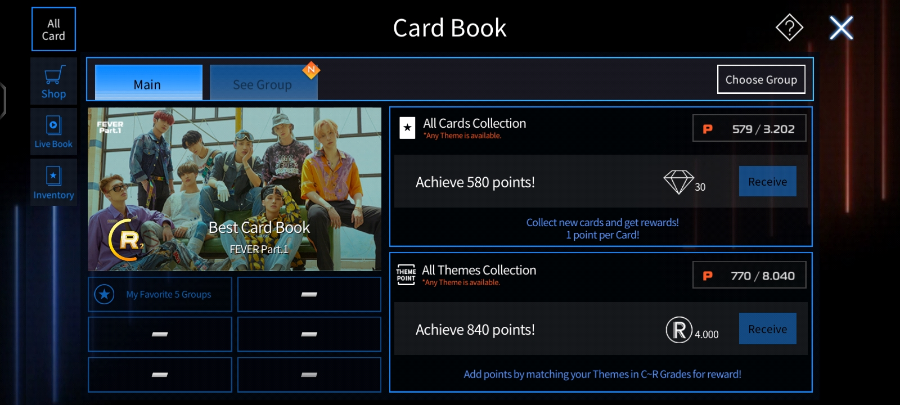

Aku tuh tipe orang yang muter playlist lagu sesuai dengan mood ku dan setiap playlist punya 'pentolan' nya. Jadi di sini aku bakal ngasih beberapa rekomendasi lagu yang bisa kamu putar di tiap-tiap mood. Tapi disclaimer dulu ges, selera tiap orang-orang berbeda jadi semoga masuk di selera kalian, iyeah.
Lagu dari album Love & Letter ini ceritain tentang cowok yang lagi suka sama crush nya dia tapi dia gak berani confess. Lirik dari lagu ini tuh isinya tentang si cowok yang memuji cewek pemilik hatinya (uhuy) dan tentang perasaannya dia ke cewek ini. Ada part yang menurutku tuh gombal tapi dengerinnya salting wkwkwk, itu partnya S.Coups setelah chorus pertama. Isinya, 'Obat buat demam, makanan buat lapar, kalau kamu buat aku' AHAY BANGET GAK TUH. Nah selain liriknya yang manis banget, musiknya pun kedengeran manis banget kayak kalo di ibaratkan makanan lagu ini kayak permen Alplenlibe rasa stroberi. Poin-poin ini lah yang buat aku berpendapat lagu ini cocok buat kalian kalau moodnya lagi pengen jatuh cinta anak remaja banget. Lagu yang bakal kusarankan buat mood yang sama kek gini, adalah If I Say I Love You dari Boynextdoor. Kalau kalian mau langsung dengerin bisa klik tulisan warna biru iyeah.
Selanjutnya ada Supernatural by NewJeans. Lagu ini sebenernya lagu jepangnya mereka tapi ada versi koreanya juga (aku lebih suka versi jepangnya sih ges).
NAH lagu ini aku ngeliat dari vibe pembawaan lagu ini. Lagu ini tuh menurutku energik tapi gak yang terlalu bersemangat jadi buat pembuka mood ku dipagi hari aku muter lagu ini sambil ikut nyanyi wkwkwk. Selain itu, lagu ini jadi lagu yang kuputer duluan buat didengerin sambil bermotor (gak bagus sih ges dikurang kurangin iyeah). This song in my opinion kinda feels like city pop(?). Musiknya yang asik dan liriknya yang kece. Tapi jujur lagunya NewJeans tuh jarang gak bagus bahkan title song mereka selalu masuk ke telinga orang orang. Kalau disuruh nyaranin lagu yang mirip vibenya kayak supernatural jujur aku bingung yeah ges but maybe i'm gonna recommend you guys Strategy by Twice guys
Jujur aku termasuk jarang dengerin lagu indo (don't ask me why), tapi lagu nina adalah lagu yang sering kuputar kalo aku dalam mood yang gloomy. Why? Apa isi dari lagu ini? let me tell you why.
Lagu ini tentang seseorang yang berusaha dan berjuang untuk orang yang disayangi. Dia lawan dunia untuk melindungi orang yang dia sayangi. Dia gak peduli bagaimana dirinya nanti yang penting orang yang dia sayangi berada dalam keadaan yang damai. Lirik yang selalu ngena di aku adalah "Ini sumpahku 'tuk biarkanmu tumbuh lebih baik, cari panggilanmu. Tumbuh lebih baik dibanding diriku". Ada doa untuk orang yang dia sayangi mendapatkan kehidupan yang lebih baik dari dia. Wkwkwk aku nulis ini sambil nangis karena ngena banget, aku keinget orang tuaku dan abangku.
FYI, aku tau lagu ini tuh dari anime dandadan. Saat itu aku belum nonton anime ini tapi sering banget lewat di fyp ku. Aku lupa itu dari episode berapa tapi ini scene kilas balik yokai Acrobatic Silky. NGENA BANGET DI AKU HIKS AKU NANGIS NONTONNYA. Lagu ini tuh bener bener kayak apa yang dirasakan sama si Acrobatic Silky ke anaknya. Anaknya tuh dunianya, dia usahakan untuk memberikan dunia yang lebih baik untuk anaknya, dia gak peduli harus banting tulang mati-matian buat ngusahakan anaknya. Kapan-kapan aku bakal review animenya disini. Moving on!
Ini adalah lagu yang selama 3 tahun jadi penghuni nomor 1 dalam repeat songku. Mau tau kenapa? Karena aku selalu play lagu ini sebelum tidur WKWKWK. Iya ges, lagu ini aku rekomendasikan buat tidur. Lagu ini tuh kasih kesan video dream core (boleh dicari di tiktok ya manteman). Aku kalau dengerin lagu sebelum tidur harus yang tenang dan comfortable, nah kebetulan lagu ini yang masuk kriteria banget. Lagu-lagunya Ichiko Aoba emang kebanyakan yang calm dan cocok diplay kalau lagi mood merenung. Tapi lagu ini bagi beberapa orang mungkin menyeramkan. Adekku sama bapakku pernah complain katanya kenapa aku muter lagu yang serem begitu, aku mikir kek '??? serem darimana?????'. Adekku bahkan pernah cerita ke aku, dia mimpi buruk karena (tanpa dia mau)dengerin lagu ini. Minta maaf di atas materai. Lagu yang menurutku cocok juga buat tidur adalah Call me by Boynextdoor dan Sebuah Tarian yang Tak Kunjung Selesai by Nadin Amizah.
Karena tadi pembukanya lagu seventeen nah penutupnya kukasih lagu seventeen juga. Lagu ini jadi teman pas aku ada di fase udah gak kuat ngehadapin dunia. Menurutku, lagu ini tentang sebuah pesan, sebuah pelukan untuk seseorang yang should take responsibilities as an adult buat gak papa untuk menjadi anak kecil sesekali. Seolah-olah lagu ini penguat untuk seseorang yang hampir tumbang dihajar dunia. Kidult juga berisi tentang seseorang yang berterima kasih ke orang yang selalu ada buat dia disaat lagi gelap, lagi sedih, bahkan saat lagi butuh pegangan. Pas aku lagi capek banget dan pengen jadi kecil lagi, aku bakal dengerin lagu ini buat penguatku untuk ngehadapin dunia lagi. Dengerin lagu ini tuh kayak lagi dipeluk terus kepalanya dipuk-puk sambil dibilangin "you did a great job, kid". Sekarang aku mau rekomendasiin lagu yang punya kesan yang sama kayak kidult, masih lagunya seventeen juga yaitu Hug dan Yawn.
JADI ITU GES rekomendasi lagu-lagu dari aku hihi. Sebenernya aku punya banyak rekomendasi yang bisa kukasih ke kalian tapi karena aku cukup lelah buat jabarin satu-satu jadi segitu aja iyh. Siapa tau lagu yang udah aku rekomendasiin cocok untuk kalian masukin ke playlist kalian yang mungkin dibuat sesuai mood juga kayak aku wkwkwkwk. Menurutku hal yang normal kalau kita mau mengeluarkan emosi yang tertahan pakai lagu, kayak contohnya mau nangis tapi gak bisa jadinya muter lagu biar nangis dan lega karena emosi negatif gak boleh kita tahan-tahan. Tapi ingat jangan berlarut-larut ya manteman, segera bangkit karna dunia gak nunggu kamu siap dulu buat jalan. Be happy, selalu sehat, semoga selalu dalam rahmat Allah dan perlindungannya. Bye ges, kapan-kapan lagi ceritanya~
SO film ini dari Jepang. Judul jepangnya sendiri adalah ima yoru, sekai kara kono ai ga kietemo. Jadi film ini ceritain tentang cowok yang namanya Toru 'nembak' cewek di kelasnya, cewek ini namanya Maori. Toru tiba-tiba confess ke Maori itu karena Toru dibully sama teman sekelasnya. Tapi kagetnya, Maori nerima confessnya Toru jadi mereka pacaran deh. Jadi, film ini ceritain tentang Toru dan Maori pacaran tapi mereka punya rahasia masing-masing yang akhirnya diketahui satu sama lain.
Nah karakter-karakter ini dimainkan oleh aktor dan aktris yang keren-keren. Akan kukenalin kalian sama mereka para pemain utamanya.
Mas mas ganteng ini aslinya member boygrup asal jepang yang namanya nani wa danshi dan Shunsuke ini member termudanya. Shunsuke mulai debut tahun 2017 dalam drama berjudul haha ni naru, dia berperan sebagai Kashiwazaki Kou. NAH dalam film ini aku suka banget sama aktingnya Shunsuke. Karakter Toru ini bener-bener manis banget as a boyfriend. Walaupun Toru sama Maori cuman pacaran bohongan tapi dia ngetreat Maori dengan gentleman. Selain itu, Toru juga yang jadi support system buat Maori untuk tetap semangat menjalani hidup. Toru sebagai anak dan adik juga sangat sayang keluarga. Dia ngejaga perasaan bapaknya yang habis di tinggal meninggal istrinya dan dia selalu ngesupport kakaknya sebagai penulis. Kataku mah punya cowok kayak Toru bakal bahagia dah lu
Aku akan mengawali dengan mbak Riko ini cakep yang mukanya tuh gemesin banget. Riko Fukumoto ini aktris yang udah memulai karirnya dari tahun 2018 dalam film berjudul Nomitori Samurai. Aku sendiri tau mbak Riko dari film Love Me, Love Me Not. Nah Mbak Riko dalam Even if This Love Disappears berperan sebagai Maori Hino. Maori disini punya penyakit Amnesia Anterograd yang membuat dia kehilangan ingatannya setiap dia bangun tidur. Jadi kalo dia tidur ingatannya semacam ke reset ges, makanya dia selalu tulis buku diary tentang yang dia lakukan di hari itu sebelum tidur. Karakter Maori dalam film ini menurutku baik, ramah banget, positive vibes, dan berpikiran maju juga. Karena penyakitnya ini juga, selama pacaran sama Toru tuh Maori selalu ngerekam atau ngefoto kencan mereka biar dia inget terus sama Toru. Sebenernya dia agak insecure juga sama Toru karna penyakitnya itu padahal Toru mah mana mikirin soal itu
Mbak Kotone ini tuh awet muda banget asli, mana terpintas dibenakku kalo dia ini kelahiran '96. Mbak Kotone ini memulai debut aktingnya pada tahun 2018. Sama kayak mbak Riko ya. Mbak Kotone ini berperan sebagai Izumi Wataya. Izumi ini sahabatnya Maori dan dia jadi salah satu orang yang tau tentang amnesianya Maori ini. Dia ini sahabat yang ngejaga banget sahabatnya. Pas pertama kali ketemu sama Toru, Izumi ini protektif banget bahkan ngeintrograsi Toru. Izumi juga ambil andil dalam hubungannya Toru sama Maori kalau ada terjadi salah paham karena dia mau ngeliat Maori bahagia. Izumi juga yang bantu Toru untuk melindungi perasaannya Maori karena bakal terjadi sesuatu ke Toru (spoiler xixi)
@penasenja_126 Gadis ini tidak mengingat masalalunya setiap bangun tidur. Semua kenangan dan masalalu dia hanya ada di sebuah diari💔. Bahkan saat dia menangisi kepergian selamanya cowo yg dicintainya juga, keesokan harinya dia tetap tidak bisa mengingat itu kecuali dia membaca semula diarinya😭. Btw, kalian udh ada yg nonton belom filem ini? #evenifthislovedissapearstonight #shunsukemichieda #rikofukumoto #masukberanda #fypシ ♬ original sound - Pena Senja
NAH sekarang aku bakal kasih review ku tentang film ini. Aku akan mengawali dengan aku dibadutin sama plotnya. Aku kasih rate 8,5/10 karena alurnya menurutku agak kecepetan karna gimana bisa tiba tiba Torunya pergi??? Tapi mungkin itu menariknya karena aku gak mengira Torunya bakal pergi. Perjalanan selama mereka pacaran tuh menurutku yang pelan pelan tapi akhirnya saling jatuh cinta karena presensi masing-masing. Sesuai dengan judulnya yang kalau diartikan ke bahasa Indonesia itu "Bahkan kalau cinta ini hilang dari bumi malam ini" bener bener ceritain bahkan kalau kamu gak ada dan aku lupa soal kamu, tubuhku bakal selalu ingat kamu. Walaupun mataku lupa kamu gimana, tapi tanganku ingat gimana bentuk wajahmu. Walaupun memoriku gak ada kamunya lagi, tapi hatiku selalu nyimpan kamu di pojok terdalam hatiku. Jadi kayak semua tentang Toru tuh biar gak ada lagi catatan soal Toru, gak ada lagi fotonya Toru, dia gak tau Toru itu siapa, muscle memory nya dia selalu ingat siapa itu Toru. Iya ges, menurutku yang buat film ini sedih tuh disitu. Endingnya emang ngeselin tapi kalo bersatu beda judul dong nanti. Overall akting dari semua aktor dan aktrisnya bagus, sesuai dengan karakternya banget dan gak ada yang keliatan berlebihan atau kurang dan plotnya sendiri lumayan lah ya soalnya membekas di aku gan
Segitu aja ges review ku tentang film ini, semoga membuat kalian tertarik buat ikut nonton juga. Jujur aku review film ini karena aku gatal banget pengen ceritain soal film ini ke orang tapi bingung ke siapa jadinya kuceritain disini deh. Segitu aja, terima kasih, sekian, kapan-kapan cerita lagi~
Hari ini aku mau ceritain anime yang kutonton sampe 5 kali. Judulnya Yuru Camp. Anime ini nyeritain tentang Rin Shima yang suka kemah sendirian. Tapi suatu hari, dia ketemu sama Nadeshiko Kagamihara yang nyasar di dekat tempat kemahnya Rin, akhirnya karena kasian diajakin lah sama Rin ke tempat kemahnya buat nunggu Nadeshiko dijemput. Plot twistnya ternyata mereka berdua satu sekolah. Nadeshiko ini ikut klub kemah, dan karena dia tau Rin itu suka kemah jadinya diajakin (dipaksa) buat ikut klub juga. Tapi Rin tolak keras ajakannya Nadeshiko. Di klub ini anggotanya ada Chiaki Oogaki sama Aoi Inuyama. Walaupun Rin bukan anggota klub, dia sering ikut klub ini kemah. Ena Sitou, temennya Rin, juga beberapa kali ikut mereka kemah. Selama berjalannya episode, klub ini bakal punya guru pembimbing yang sering kemah juga. Namanya Minami Toba Sensei. Dalam anime ini isinya tuh banyak banget ilmu buat kalian yang minat sama kemah. Di tiap episode pas mereka kemah selalu dikasih info tentang tips-tips perkemahan. Selain anime ini banyak ngasih ilmu tentang perkemahan, nonton ini bikin kalian pengen ikut kemah juga hshshshs. Selama aku nonton anime ini sampai season terakhirnya yang selalu terpikirkan di otakku cuman mau ikut kemah juga... hikd
Jujur aku banyak lupanya soal anime ini karena udah lama gak nonton lagi. Terakhir aku nonton kayaknya kelas 12 kemaren deh. Aku selalu nonton ini pas mau makan, pas lagi pengen nyantai, bahkan mau tidur aku nonton ini wkwkwk. Anime ini tuh menurutku comfort anime yang cocok banget kalo kamu mau nonton pas lagi nyantai, pas lagi pengen yang hening, pas lagi capek, menurutku cocok ges. Walaupun anime ini terkesan santai tapi ini termasuk seru ditonton karena semua proses dirikan tenda dan masak selama kemah tuh ditampilkan dengan menarik. Selain itu tingkah karakter-karakter anime ini juga menghibur banget jadi nontonnya gak bakal bosen.
Sebelum tutup post hari ini, aku mau ngasih info kalian yang mana mana aja karakternya di dalam post itu. Yang rambut pink namanya Nadeshiko, yang rambut biru namanya Rin, yang rambuk hitam namanya Ena, yang rambutnya hijau agak kekuningan namanya Aoi, dan yang berkacamata namanya Chiaki sebagai ketua klubnya. Itu aja ges, aku lelah mengetik jadi kapan-kapan cerita lagi~
Buat Kpopers mungkin udah gak asing lagi sama game buatan Dalcomsoft ini. Jadi game superstar ini adalah game rhythm buatan dalcomsoft. Kalau kalian pernah main Guitar Hero, nah gamenya kurang lebih kayak gitu. Lagu-lagu yang dipakai dalam game ini tuh official dari Grupnya. Jadi, game ini tuh bisa dibilang official dari Ateez. Di game ini tuh kalian bakal dapat kartu karakter buat dipakai saat kalian main, selain itu kesulitan dalam game ini bisa kalian pilih, ada easy, medium, dan hard. Mekanik mainnya mudah banget, kalian cuma perlu pilih yang mau kalian mainkan, kalian atur kartu yang bakal kalian pakai, terus tinggal press music buttons nya sesuai timingnya. Kalian bisa klik icon SSATZ nya kalau tertarik sama gamenya.
Dalam game ini banyak fitur-fitur interaktif yang bisa kalian gunakan. Akan kukenalkan satu-satu
Menu ini tuh isinya semua misi yang dikasih sama game ini. Ada misi harian, mingguan, dan bulanan. Kadang kala juga kalau ada event misi dari event itu bisa kita liat di menu Mission ini.

Nah kalau menu ini isinya akumulasi berapa lama kita main game ini. Di menit tertentu kita dapat reward. Nah maksimal playtimenya sendiri itu 60 menit atau 1 jam. Jadi kalau kalian main lama kek bakal dibayar sama reward dari mereka ini.

Menu ini tuh isinya Event Banners yang lagi diadakan sama SSATZ. Menu ini bakal hilang kalau gak ada event yang lagi di adakan ges.

Kalau kalian lagi kehabisan currencies, kalian bisa banget ke menu ini karena disini kalian bisa dapet free item dengan nonton iklan.
 

Menu ini berisikan koleksi kartu yang kalian dapatkan. Ada 2 menu lagi di dalamnya, live theme dan card book. Live theme ini berisi kartu yang bergerak dan biasanya didapatkan pada event terbatas. Card book sendiri isinya kumpulan kartu-kartu kalian. Di card book ini kalian bisa dapat reward kalau kalian berhasil mencapai goals yang dikasih.
Kalau Collection cuman nampilkan kartu yang kalian dapat, kalau di inventory kalian bisa upgrade dan jual kartu yang kalian punya. Buat upgrade kartu, kalian perlu pakai lima kartu yang gak kalian pakai dan perlu bayar dengan rhythm poins yang biayanya tergantung kartu yang kalian update.
Menu ini nunjukin ranking pada tingkat kalian. Disini kalian juga bisa ngeliat akumulasi poin kalian berapa dan ranking lagu dengan poin terbanyak kalian.
Sesuai dengan namanya, menu ini tempat kalian buat beli-beli. Kalian bisa beli wallpaper lobi, beli kartu, beli foto profil, dan juga beli currencies.
Pada tampilan gameplay nya ada lagu-lagu yang bisa kalian pilih dan juga kalian bisa pilih kesulitan yang kalian mau. Di pojok kiri, di bawah profile ada ranking kalian dan disampingnya ada filter untuk menampilkan display lagunya. Kalian bisa memilih untuk ditampilkan menurut album lagunya, tingkat kesulitan, terakhir di update, atau terpopuler dalam minggu ini. Pada bagian paling bawah di mulai dari kiri adalah riwayat skor yang kalian peroleh dari terakhir kalian mainkan. Disitu diperlihatkan poin kalian dan poin tertinggi sedunia. Di samping skor, ada tampilan kartu-kartu untuk menambah poin saat kalian memainkan lagu tersebut. Kartu yang dipakai harus menyesuaikan dengan album lagunya. Poin tambahan yang diberikan kartu akan semakin tinggi jika kartu yang digunakan banyak menggunakan tema yang sama. Jika kalian sudah siap, kalian bisa klik start untuk memainkan lagunya dan menikmati permainannya.
Buat kalian yang suka main game yang rhythm/musik kayak gini, harus banget cobain lagu ini. Selain kalian mendapatkan kesenangan dari bermain lagu ini, kalian bisa kenal sama lagu-lagu dari grup ini. Lagu-lagu disini kebanyakan dalam satu lagu bakal dibagi jadi Verse 1 dan Verse 2 tapi ada juga versi Full nya. Kalau ada lagu yang baru masuk biasanya bakal ada kartu dengan tema baru dalam satu album dan ada yang bersifat event terbatas dan ada juga yang kalau eventnya sudah habis kalian masih bisa dapatkan kartunya.
Aku mainin game ini dari awal perilisan game ini. Itu pun aku bisa ngikutin awal perilisannya karena pada tahun yang sama aku baru aja ngestan grup ini. TMI sedikit, aku kecantol grup ini gara-gara highnote main vocal mereka pas perform wonderland di acara Kingdom: Legendary War. Pas awal-awal main game ini aku cukup kesulitan karena aku main guitar hero aja gak pernah menang wkwkwk. Butuh sebulan kayaknya buat aku bisa lancar main game ini. Belajar dari easy dulu, baru normal, dan akhirnya bisa deh main di hard mode. Terus sekarang aku kesulitan main di easy game karna aku gak terbiasa sama tempo di easy. Aku senang main SSATZ ini karena not musiknya bentuknya bulat jadi enak buat mencetnya. Kekurangannya cuman dia agak pelit kartu bagus dan diamonds iyh. Juga agak membosankan karena challenge yang dikasih cuman tantangan buat dapet poin lebih tinggi daripada poin bulan sebelumnya. Mungkin buat dalcomsoft bisa nambahin challenge yang lebih menarik lagi. Segitu aja, sekian, babaii kapan-kapan cerita lagi~
Sebelum aku cerita soal au kesukaanku, aku mau ngasih tau dulu apa itu au. AU atau Alternative Universe adalah cerita fiksi yang dibuat berbeda dengan kenyataan. Karakter yang digunakan dalam au biasanya menggunakan tokoh manusia asli atau objek yang ada di dunia (asal kalian tau ada au yang tokohnya adalah merk mie). Yang membedakan au dengan novel adalah penyampaian cerita kebanyakan lewat chat para karakter dan tweet yang dibuat oleh para karakter. Tentu ada narasinya, tapi gak terlalu banyak. Biasanya digunakan untuk menceritakan kejadian saat para karakter bertemu langsung dalam ceritanya. Beda kan sama novel. Kalau novel dia full teks dari awal sampai akhir dan interaksi mereka disampaikan lewat tulisan. Au biasanya dibuat dalam thread twitter (sekarang namanya X) tapi ada juga yang membuat au di tiktok cuman kalau di tiktok narasinya di screenshot. Kalau kalian tau fanfiction, nah mirip mirip gitulah tapi beda di cara pembuatan ditampilkannya cerita.
Au ini tuh au han taesan artinya ini cerita fiksi ciptaan fans tentang han taesan. Han Taesan dalam imajinasi fans lah istilahnya, jadi dalam au ini bukan cerita asli tentang han taesan ya. Au ini bergenre college life, slight enemies, forced proximity, and secret pining. Karakter utama dalam au ini ada Pratama Rizaldi (Tama/Ical) dan Ghea Kamila (Ghea), keduanya sama-sama anak arsitektur angkatan 2022.
Au ini bercerita tentang Ghea yang harus sekelompok sama Tama. Sekelompok aja mah gak masalah, tapi yang dipermasalahkan sikapnya Tama ke Ghea yang menurut Ghea gak masuk akal karna Tama memperlakukan Ghea dengan sangat tidak ramah, kayak benci sama Ghea. Ghea yang bingung kenapa diperlakukan begitu jadi ikut gak suka sama Tama, tapi diam-diam she can't help herself to not falling in love with Tama. Itu lah sinopsisnya ya ges. Now, time to yapping about this au
Karakter Tama di au ini tuh betul-betul nyebelin BANGET. Bayangin jadi Ghea yang harus berhadapan sama Tama yang susah diajak kerja bareng, kalau lagi kelas dianggap gak ada, dan kalau diajakin ngobrol balasannya sangat tidak ramah. Gara-gara Tama nyebelin banget dan aku gak kuat ngebayangin gimana Ghea harus ngehadapin Pratama gak jelas Rizaldi itu. Tama ini, bagi Ghea, kebenciannya tuh tanpa alasan banget soalnya Ghea gak pernah ngejahatin Tama. Di au ini bakal ngasih tau kenapa Tama gak suka sama Ghea dan setelah Tama cerita soal itu akhirnya Ghea paham alasan sikap Tama ke dia selama ini. Tapi tetep aja Tama lu ngeselin banget SUMPAH, gw jadi Ghea bodo amat sama nilai yang penting gw gak sekelompok sama LU. Seperti yang sudah kusebutkan tadi, secret pinning masuk ke genre au ini, yang mana aslinya Ghea tuh suka sama Tama. Jadi mau sekesel apapun Ghea sama Tama dia gak bakal pernah benci sama Tama. Of course, si Tama gak tau dan Tama juga gak nyadar kalau dia tanpa sadar juga tertarik sama Ghea cuman ketutupan rasa gak sukanya dia aja. Mana sering denial lagi.
Yang kusuka dari au ini selain plotnya yang menarik, aku suka dari bagaimana penulisan kak mz. Penulisannya tuh rapi, dia menggunakan bahasa yang gak lebay, penyampaiannya juga gak bertele-tele, dan juga penulisannya dia tuh bisa kita pahami juga kita imajinasikan. Makanya mau secapek apapun pas awal aku baca aku tetep namatin au ini karna penulisannya yang buat aku betah bacanya. Endingnya juga memuaskan banget soalnya aku suka kalo genrenya enemy to lovers eak. Kukasih 9/10, kurang 1 soalnya aku butuh spin-off yang banyak :D
SEGITU AJA CERITANYA intinya aku bener bener suka sama alur jalan ceritanya yang gak melulu bertengkar atau cinta-cintaan ada interaksi lain yang buat aku terinspirasi dikit yaitu bagian Ghea ikut lomba iyh, aku jadinya pengen ikutan juga. Tama juga setelah konflik ada character development, MANA MANIS BANGET LAGI KELAKUANNYA ADUH. Sekian dari saya, terima kasih, kapan-kapan lagi ceritanya~
Kalian tau kan dimsum yang sering di jual itu? Nah sebenernya namanya itu Xiu Mai atau Siu Mai. Dumpling satu ini tuh asalnya dari China yaitu Kanton. Selain itu, bersama dengan Har Gow, Char Siu Bao, dan Egg Tart, jadi Four Heavenly Kings dimsum ala Kanton karena rasanya yang enak banget dan jadi favorit kebanyakan orang. Dimsum sendiri artinya cemilan pendamping minum teh. Orang china itu punya budaya minum teh, dan dimsum jadi pendamping saat acara itu. Dimsum ada banyak jenisnya, ada yang rebus, ada yang kukus, ada yang goreng, ada yang asin, dan ada yang manis. Siu Mai sendiri masuknya ke dimsum asin dan kukus.
Siu Mai ini bentuknya kayak keranjang terus didalamnya di isi olahan daging. Kalau di china daging yang dipakai adalah daging babi yang dicampur dengan udang, karena Indonesia mayoritas Muslim jadi daging babi diganti daging ayam. Ukurannya juga dibuat sekali suap, dan menurutku dengan makan langsung satu tuh bakal langsung kerasa nikmatnya Siu Mai. Siu Mai ini ada semacam saus yang bisa kalian gunakan, yaitu chilli oil atau saus pedas. Kalau kalian mau makan polosan juga tetap enak. Sekarang juga ada banyak jenis topingnya. Ada yang pakai jamur, crab stick, keju mozarella, atau yang sekarang lagi ramai yaitu saus mentai. Perlu kalian tau juga di Indonesia juga punya Siomay, asalnya dari bandung. Siomay yang dari bandung ini dari olahan tepung kanji dan ikan. Selain bahan pokoknya yang beda, Siomay ini pakai saus kacang terus biasanya pakai tambahan telur rebus, pare, dan kol.
Dari Kiri ke Kanan, Siu Mai dan Siomay Bandung
Aku tuh SECINTA itu sama Siu Mai. Pertama kali makan aku tuh rasanya gak mau bagi ke siapapun karena SEENAK ITU. Aku percaya kalo dumpling ini jadi salah satu four heavenly kings. Pendapatku soal cemilan ini, poin yang membuat dia banyak diminati adalah daging dari siu mainya yang juicy banget. Kalau dagingnya gak juicy itu tuh bakal menurunkan nikmat dan enaknya siu may. Setiap aku makan dimsum ini tuh rasanya tuh Ya Allah... Nikmat mana lagi yang kau dustakan. Kalau Siu Mai ini orang, udah kunikahin (hiperbola, plis jangan dianggap serius). Semua orang harus tau betapa nikmat dan ENAKnya Siu Mai. Aku akan berulang kali bilang kalau aku cinta Siu Mai. Sekian dari aku, Kapan-kapan cerita lagi~